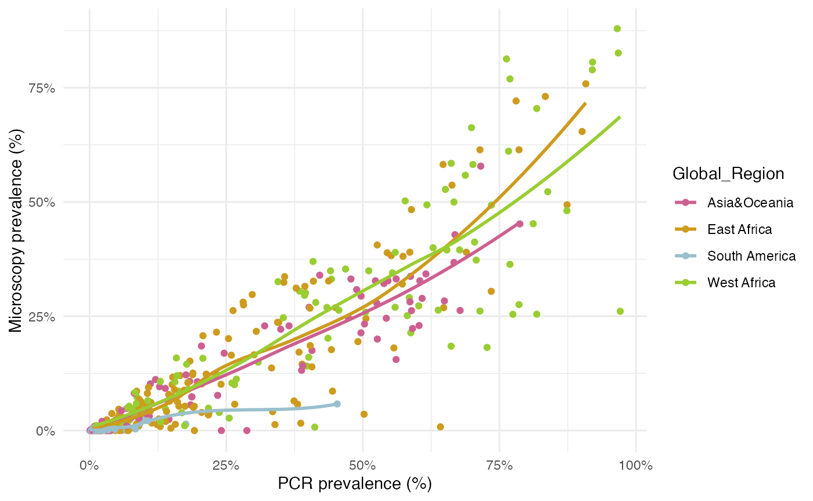
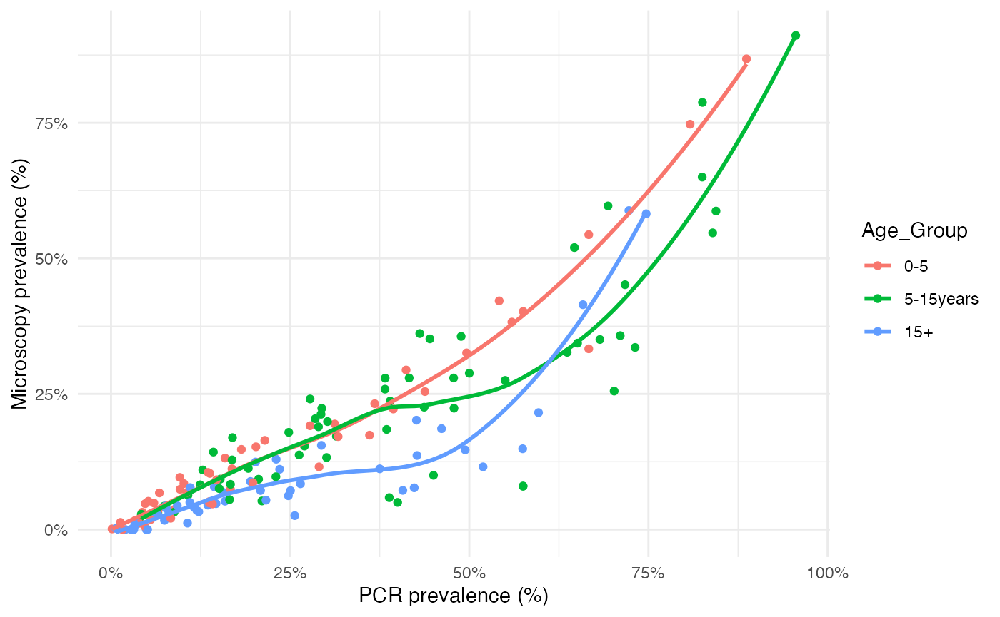

vignettes/data_diagnostics.Rmd
data_diagnostics.RmdThis report aims to:
Data: PCR_micro_full_whittaker2021
The data come from a systematic review by Whittaker et al. (2021) looking into global patterns of submicroscopic P. falciparum infection. This review collates data from 166 studies containing 551 distinct cross-sectional surveys in which surveyed individuals had malaria infection assessed by both PCR and microscopy from a given location. Of these surveys, 164 were done in a specific age-group (0–5 years, 6–15 years, and >15 years) and 387 were from cross-sectional surveys done in populations that spanned more than one age-group.
Below we can take a look at the variables included in the dataset:
head(PCR_micro_full_whittaker2021)## # A tibble: 6 × 19
## Name Year Globa…¹ Country Admin_1 Hist_…² Curr_…³ PCR_N…⁴ PCR_N…⁵ PCR_P…⁶
## <chr> <dbl> <chr> <chr> <chr> <dbl> <dbl> <dbl> <dbl> <dbl>
## 1 Proietti 2011 East A… Uganda Apac 0.746 0.625 241 133 5.52e-1
## 2 Souza 2012 South … Brazil NA NA NA 74 1 1.35e-2
## 3 Souza 2012 South … Brazil NA NA NA 74 2 1.35e-2
## 4 Souza 2012 South … Brazil NA NA NA 134 1 1.35e-2
## 5 Atkinson 2012 Asia&O… Solomo… NA NA NA 1843 1 5.43e-4
## 6 Pegha M… 2016 West A… Gabon Ogooue… 0.341 0.189 277 161 5.81e-1
## # … with 9 more variables: Microscopy_N_Tested <dbl>,
## # Microscopy_N_Positive <dbl>, Micro_Prev <dbl>, PCR_Method <chr>,
## # PCR_Method_Raw <chr>, Microscopy_Fields <dbl>, Microscopy_Leucocytes <dbl>,
## # Sampling_Season <chr>, Sampling_Season_Raw <chr>, and abbreviated variable
## # names ¹Global_Region, ²Hist_Trans, ³Curr_Trans, ⁴PCR_N_Tested,
## # ⁵PCR_N_Positive, ⁶PCR_PrevThe authors found that microscopy detected 44.9% (95% CI 42.0–47.8) of all PCR-detectable infections. This varied by setting, with more submicroscopic infections (60-70%) in areas with lower PCR prevalence such as South America, but <20% submicroscopic infections in areas with the highest PCR prevalence such as West Africa. The authors found that both historical and current transmission levels are important determinants of the submicroscopic reservoir size.
PCR_micro_full_whittaker2021 %>%
ggplot(aes(x = PCR_Prev, y = Micro_Prev, group = Global_Region, color = Global_Region)) +
geom_point() +
geom_smooth(method = "loess", formula = "y ~ x", se = F) +
scale_x_continuous(labels = scales::percent_format(accuracy = 1)) +
scale_y_continuous(labels = scales::percent_format(accuracy = 1)) +
scale_color_manual(values = c("hotpink3", "goldenrod3", "lightblue3", "olivedrab3")) +
labs(x = "PCR prevalence (%)",
y = "Microscopy prevalence (%)") +
theme_minimal()
Data: PCR_micro_age_whittaker2021
The authors also aggregated the surveys carried out in specific age groups into three categories: young children (0–5 years), n=49 sureveys, older children (6–15 years) n=62 surveys, and adults (>15 years) n=53 surveys. This age-disaggregated dataset is also available, below we can take a look at the variables included in this dataset:
head(PCR_micro_age_whittaker2021)## # A tibble: 6 × 21
## Name Year Globa…¹ Country Admin_1 Hist_…² Curr_…³ PCR_N…⁴ PCR_N…⁵ PCR_P…⁶
## <chr> <dbl> <chr> <chr> <chr> <dbl> <dbl> <dbl> <dbl> <dbl>
## 1 Proietti 2011 East A… Uganda Apac 0.746 0.625 57 38 0.667
## 2 Proietti 2011 East A… Uganda Apac 0.746 0.625 62 43 0.694
## 3 Proietti 2011 East A… Uganda Apac 0.746 0.625 122 52 0.426
## 4 Atelu 2016 West A… Ghana Upper … 0.653 0.493 29 4 0.138
## 5 Atelu 2016 West A… Ghana Upper … 0.653 0.493 38 8 0.211
## 6 Atelu 2016 West A… Ghana Upper … 0.653 0.493 142 17 0.120
## # … with 11 more variables: Microscopy_N_Tested <dbl>,
## # Microscopy_N_Positive <dbl>, Micro_Prev <dbl>, Age_Group <fct>,
## # Age_Group_Raw <chr>, PCR_Method <chr>, PCR_Method_Raw <chr>,
## # Microscopy_Fields <dbl>, Microscopy_Leucocytes <dbl>,
## # Sampling_Season <chr>, Sampling_Season_Raw <chr>, and abbreviated variable
## # names ¹Global_Region, ²Hist_Trans, ³Curr_Trans, ⁴PCR_N_Tested,
## # ⁵PCR_N_Positive, ⁶PCR_PrevThe authors found that a greater proportion of submicroscopic infections was observed in adults compared to young and older children. This was less pronounced in areas with higher transmission.
PCR_micro_age_whittaker2021 %>%
ggplot(aes(x = PCR_Prev, y = Micro_Prev, group = Age_Group, color = Age_Group)) +
geom_point() +
geom_smooth(method = "loess", formula = "y ~ x", se = F) +
scale_x_continuous(labels = scales::percent_format(accuracy = 1)) +
scale_y_continuous(labels = scales::percent_format(accuracy = 1)) +
labs(x = "PCR prevalence (%)",
y = "Microscopy prevalence (%)") +
theme_minimal()